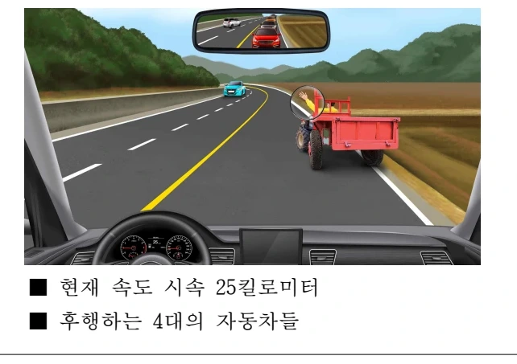

809. Hai cách lái xe nào là an toàn nhất trong tình huống sau?

- ①Bật đèn pha trước và đèn xi nhan bên trái rồi an toàn vượt qua.
- ②Chú ý đi theo tín hiệu tay của người lái xe máy cày và an toàn vượt qua.
- ③Khi người lái xe máy cày đã dừng ra ký hiệu tay thì vượt lên trước.
- ④Không quan tâm đến ký hiệu tay của người lái xe máy cày và đi theo phía sau.
- ⑤Duy trì khoảng cách an toàn với xe máy cày.
Xem đáp án
Đáp án
④ Không quan tâm đến ký hiệu tay của người lái xe máy cày và đi theo phía sau.
⑤ Duy trì khoảng cách an toàn với xe máy cày.
Căn cứ
Điều 13, khoản 3 Luật Giao thông đường bộ. Người điều khiển ô tô, ngựa phải lái xe về phía bên phải tim (nếu có vạch tim thì lấy vạch tim; sau đây áp dụng tương tự) của đường (chỉ lòng đường trong trường hợp đường có vỉa hè và lòng đường riêng). Đoạn 4 Bất kể đoạn 3, người điều khiển ô tô và ngựa có thể lái xe vào giữa hoặc bên trái đường trong bất kỳ trường hợp nào sau đây: 1. Khi đường là một chiều. 2. Khi không thể vượt bên phải đường do đường bị hư hỏng, do thi công đường hoặc do chướng ngại vật khác. 3. Khi muốn vượt xe khác trên đường có chiều rộng bên phải đường nhỏ hơn 6 mét. Tuy nhiên, điều này không áp dụng trong bất kỳ trường hợp nào sau đây. đi. Khi không xác định được phía bên trái của đường B. Các trường hợp có nguy cơ cản trở giao thông đi ngược chiều. Khi có biển báo an toàn cấm hoặc hạn chế vượt, v.v. 4. Khi chiều rộng bên phải của đường không đủ cho ô tô, ngựa đi qua. 5. Khi Trưởng Công an tỉnh, thành phố xét thấy cần ngăn ngừa nguy hiểm giao thông tại các đoạn đường cong có độ dốc lớn và chỉ định các đoạn đường, phương thức đi qua và khi đi qua theo chỉ định. Người lái máy nông nghiệp không phải người có thẩm quyền điều khiển giao thông bằng hiệu lệnh tay. Khi di chuyển trên đường, người điều khiển xe tải, xe chuyên dụng, máy móc nông nghiệp di chuyển với tốc độ chậm đôi khi ra hiệu bằng tay với ý nghĩa “vừa vượt qua phía trước”. Tuy nhiên, trong trường hợp này, cử chỉ đó không phải hiệu lệnh điều khiển giao thông chính thức.
Phần căn cứ là bản dịch máy để tham khảo.